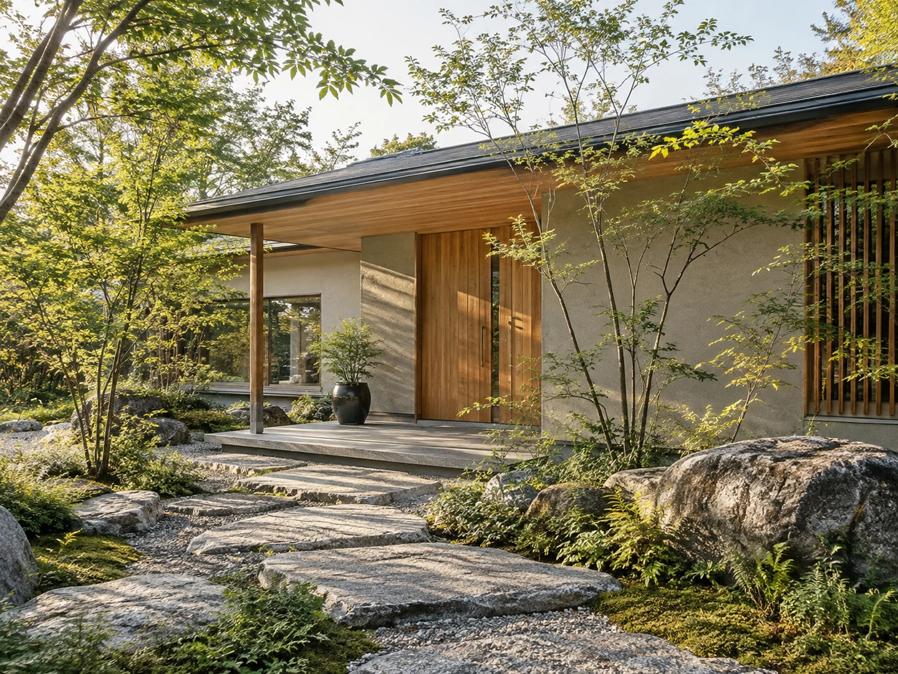
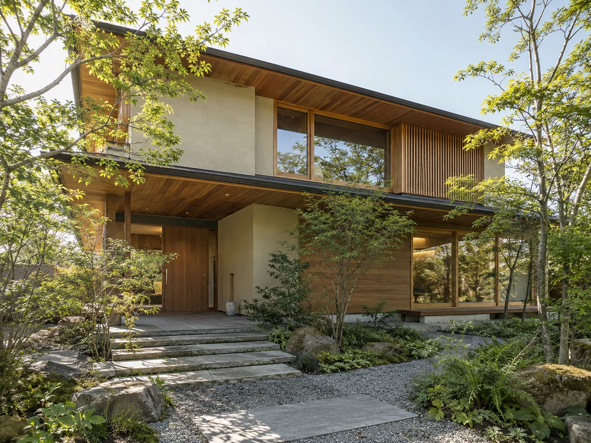
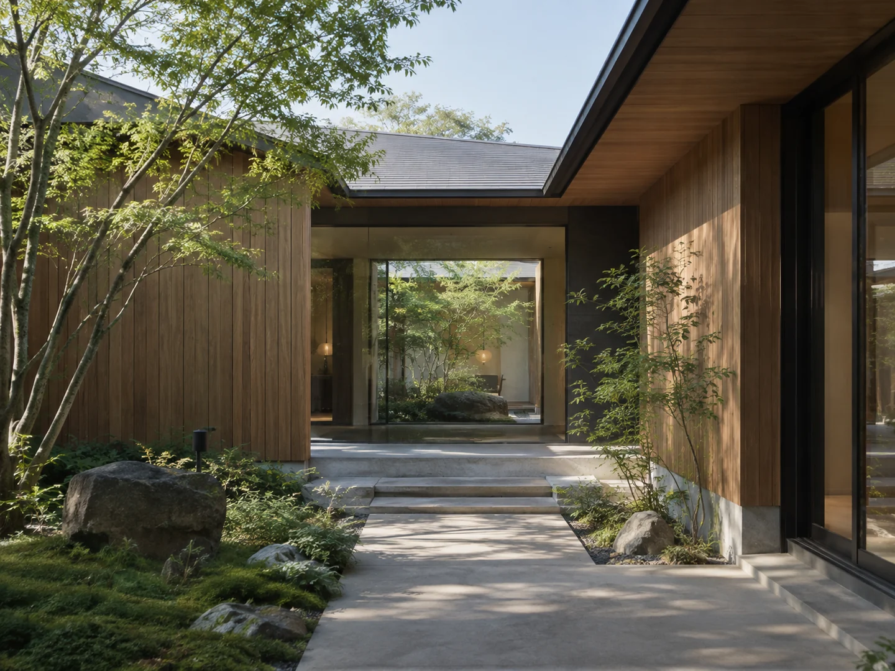
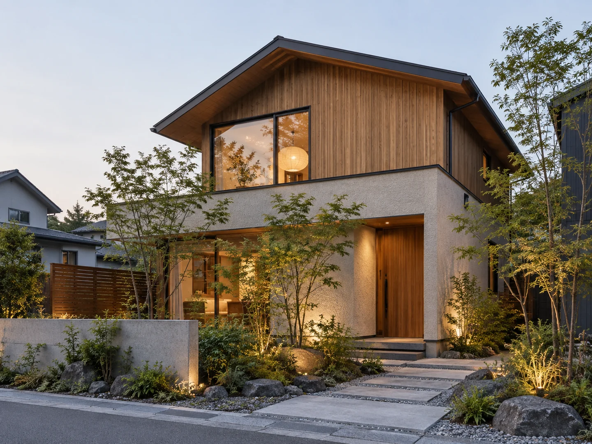
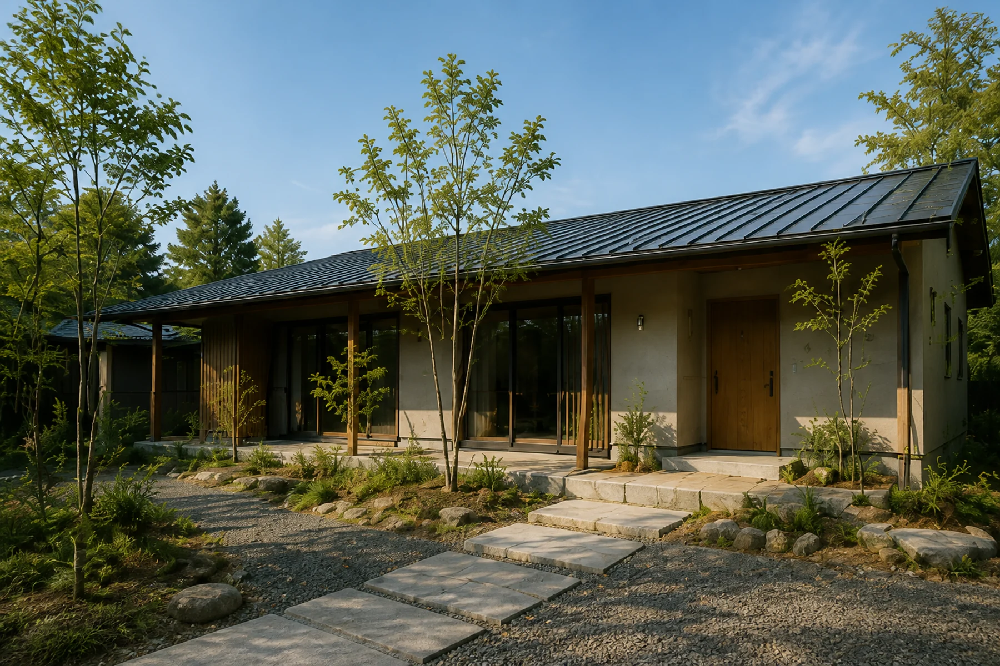
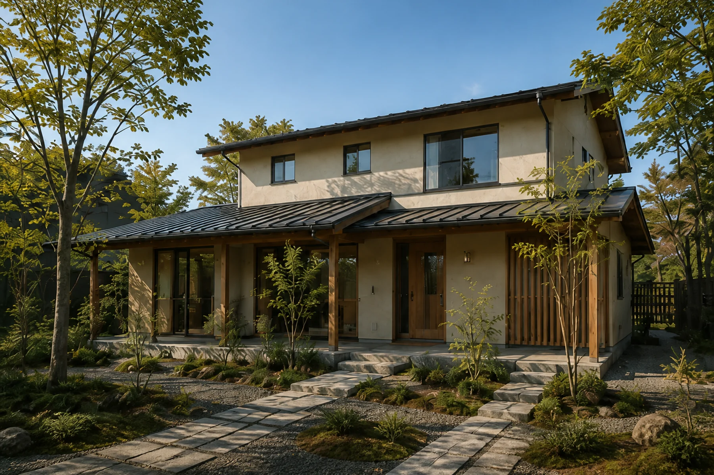
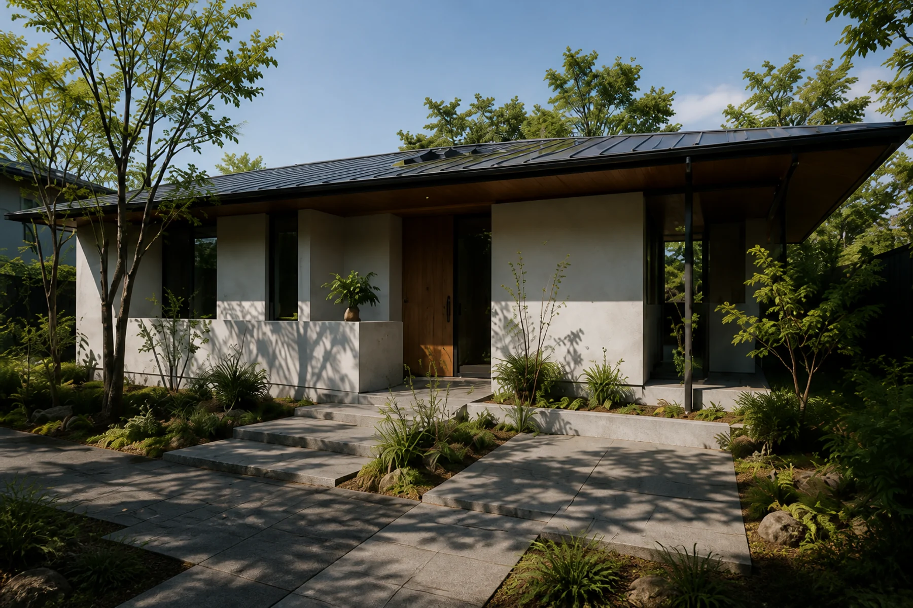
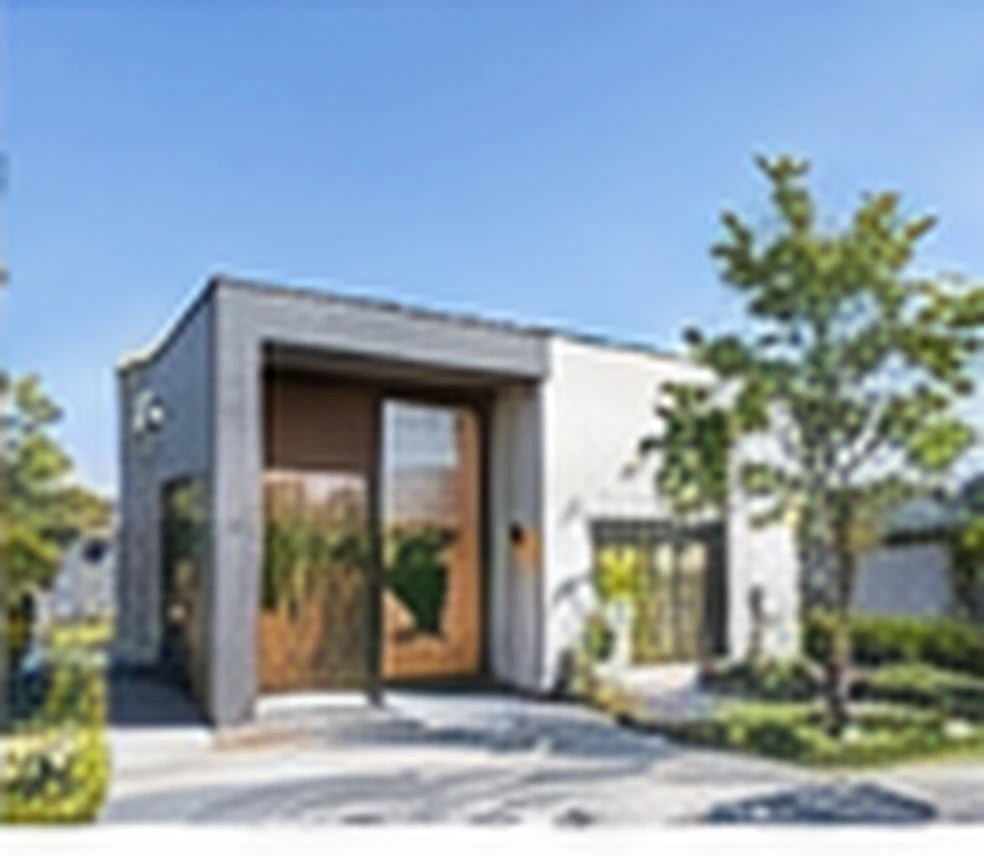
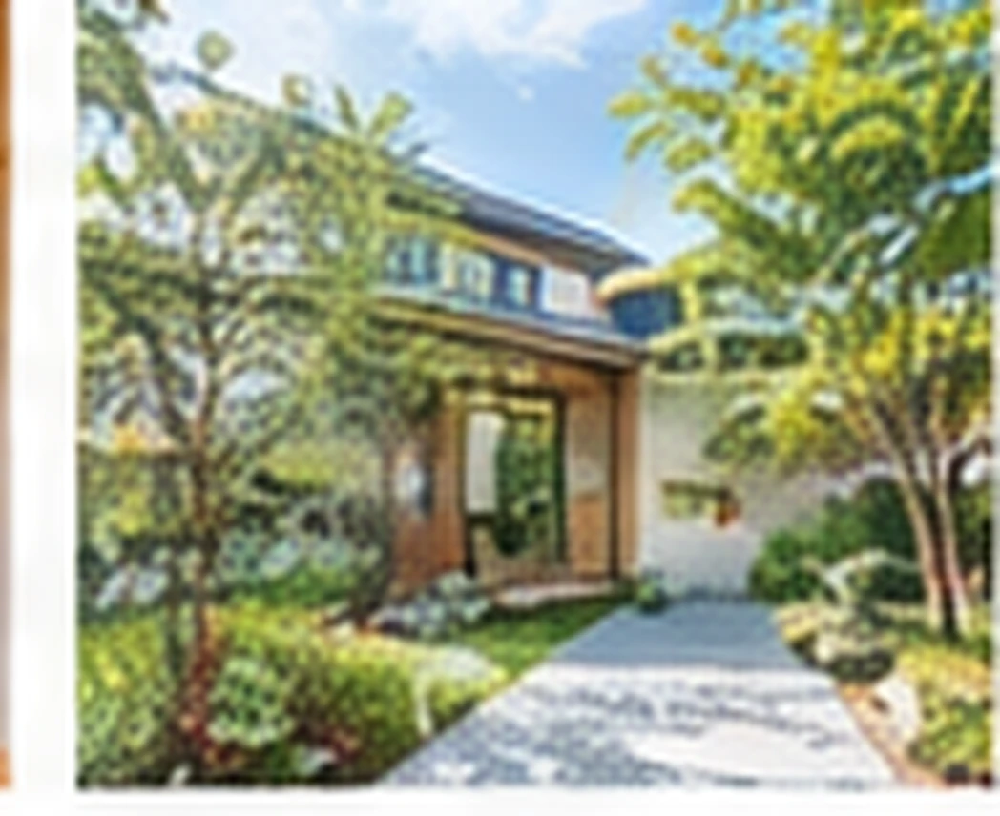

庭とつながる平屋
栃木県 宇都宮市 ｜ 延床面積 112.6㎡
- 平屋
- 中庭
- 自然素材

WORKS
栃木県 宇都宮市 ｜ 延床面積 112.6㎡

栃木県 小山市 ｜ 延床面積 125.3㎡

栃木県 鹿沼市 ｜ 延床面積 105.4㎡

栃木県 宇都宮市 ｜ 延床面積 138.2㎡

栃木県 那須塩原市 ｜ 延床面積 119.8㎡

栃木県 小山市 ｜ 延床面積 129.1㎡

栃木県 真岡市 ｜ 延床面積 92.3㎡

栃木県 宇都宮市 ｜ 延床面積 117.6㎡

栃木県 小山市 ｜ 延床面積 144.5㎡

栃木県 宇都宮市 ｜ 延床面積 118.4㎡

栃木県 小山市 ｜ 延床面積 108.7㎡

栃木県 鹿沼市 ｜ 延床面積 123.0㎡
栃木県 宇都宮市 ｜ 延床面積 131.5㎡
栃木県 那須町 ｜ 延床面積 101.8㎡

栃木県 宇都宮市 ｜ 延床面積 110.2㎡

栃木県 那須町 ｜ 延床面積 116.8㎡
栃木県 小山市 ｜ 延床面積 120.1㎡

栃木県 小山市 ｜ 延床面積 106.8㎡

施工事例をご覧いただき、
気になる住まいの雰囲気がありましたら、
ぜひお気軽にご相談ください。